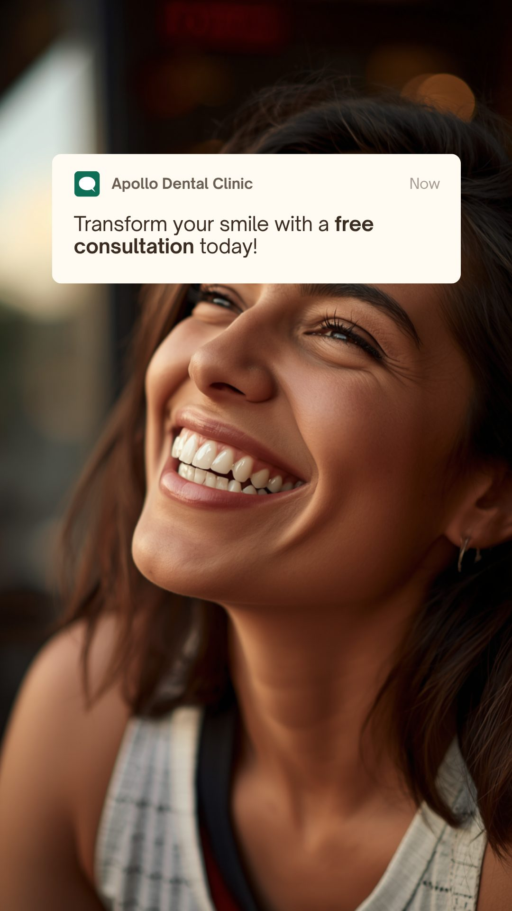

My GUVI capstone brief just said "prepare the best ad plan for a healthcare business." I went back afterward and rebuilt it the way I'd run it as a working marketer — a plan that runs year-round instead of around one offer, rolled out city by city, backed by a real technical SEO audit and the compliance checks most student projects skip.
My actual GUVI capstone brief was short: prepare the best ad plan for a healthcare business, with a suggested budget, promoted across India, and include the Avg. CPC, Cost/Conversion, and expected Leads. After I submitted it, I went back and rebuilt the whole thing the way I'd actually do it on the job — a plan that runs all year instead of being tied to one offer, and rolled out city by city instead of spreading a fixed budget thin across the whole country from day one.
Objective: generate qualified appointment leads for Apollo Dental across 5 real clinic cities, at a sustainable and improving cost-per-lead. Primary KPI: Cost per Lead (CPL). Secondary KPI: lead-to-booked-appointment rate.
Trusted brand with pan-India presence, advanced technology and skilled professionals, strong testimonials and word-of-mouth.
Perceived as costlier than local clinics, limited focus on younger demographics, dependence on promotions.
Rising oral health awareness in India, growing demand for aesthetic dentistry, potential wellness/influencer partnerships.
Local and international chains expanding into India, volatile digital ad costs, unpredictable healthcare spending.
| Competitor | Strengths | Weaknesses |
|---|---|---|
| Clove Dental | Affordable pricing, large presence, good digital campaigns | Limited focus on premium services |
| 32 Smiles Dental Care | Strong emphasis on aesthetic procedures | Niche, limited geographic reach |
| Local clinics | Personalized service and convenience | No brand recognition, limited ad capability |
Core audience
Adults 25–55, urban India, moderate-to-high disposable income. Targeted on demographics and general wellness interests only.
Secondary audience
Parents/household decision-makers searching for family dental care — often the highest-value segment.
If the brief says "promote across India," that doesn't mean spreading the budget evenly across the whole country from launch. That just generates leads in cities where there's no clinic to actually convert them.
100% of budget across Apollo Dental's 5 established metros — Mumbai, Delhi NCR, Bangalore, Chennai, Hyderabad. Establish real CPL benchmarks first.
Reallocate budget toward whichever cities beat their estimated CPL before adding new geographies — evidence-led, not a guess.
| Stage | Channel & Objective | Purpose |
|---|---|---|
| Local visibility | Google Business Profile — organic | Free, high-intent Maps map-pack visibility |
| Reach | Google Display + YouTube — Awareness, CPM | Cheap reach before someone actively searches |
| Intent capture | Google Search — Maximize Conversions | Highest-intent traffic |
| Awareness | Meta — Reach objective | Build pixel data and familiarity with the brand |
| Consideration | Meta — Engagement objective, retargets Awareness viewers | Build trust (certifications, pricing, scale) before asking for a lead |
| Conversion | Meta — Leads objective, native form, retargets Consideration engagers | Objective correctly matched to mechanism, warmest audience only |
Google's Local Services Ads is deliberately excluded — not confirmed available for healthcare even where the product exists (US/Canada).
Run against Apollo Dental's actual live website — not a single city page. apollodental.in has 220+ locations across 45 cities,I used the free version of Screaming Frog, which crawls up to 500 URLs, so these totals cover the pages crawled rather than every page on the site .
| Issue | Type | Priority | URLs |
|---|---|---|---|
| Page Titles: Missing | Issue | High | 5 |
| Canonicals: Contains Fragment URL | Issue | High | 1 |
| H1: Missing | Issue | Medium | 49 |
| H1: Multiple | Warning | Medium | 120 |
| Page Titles: Duplicate | Opportunity | Medium | 6 |
| Canonicals: Missing | Warning | Medium | 1 |
| Content: Low Content Pages | Opportunity | Medium | 24 |
| Meta Description: Missing | Opportunity | Low | 8 |
| H2: Missing | Warning | Low | 2 |
| URL: Uppercase | Warning | Low | 15 |
| Images: Missing Alt Attribute | Issue | Low | 4 |
What I'd fix first: the 5 missing page titles and the fragment-URL canonical — both affect how Google indexes and shows those pages. The H1 issues affect the most URLs but are likely a templating fix, not 169 one-off edits.
Google Search: Trusted Dental Care | Book Today — MDS-Certified Dentists
Painless treatments, transparent pricing, appointments across 5 metros. Book your free consultation now.
Ad extensions: Call, Location, Sitelinks
Meta — Awareness: Transform your smile with a free consultation today!
Placement: Instagram Stories. CTA: Learn More.
Meta — Consideration: Trusted Smiles, Backed by Experience. MDS-certified dentists · Transparent pricing · 220+ locations across India.
Placement: Instagram feed, retargets Awareness viewers. CTA: View Services.
Meta — Conversion: Book Your Free Consultation This Week.
Placement: Instagram feed, retargets Consideration engagers. CTA: Book Now (native Lead Form, pre-filled).
Four creatives, one per funnel stage from Section 05. The Search and Consideration ads are coded directly to match each platform's real layout. The Awareness and Conversion creatives are concept visuals I designed in Canva using stock photography. Copy checked against the compliance notes in Section 12 — no testimonials used anywhere, since a real one would need documented patient consent I don't have.
Google Search · intent-capture

Meta Reach · awareness (Instagram Stories)
Meta Engagement · consideration (Instagram feed)
Meta Leads · conversion (Instagram feed)
Educational project — not an actual Apollo Dental campaign.
Dental ads that only talk about the procedure feel clinical and cold. I wanted this one to lead with how people actually feel about their smile, not the treatment itself.
It shifts the focus from the procedure to the outcome people actually care about — confidence. And since it isn't tied to a date or an offer, it works just as well in June as it does in December.
My own recommendation as the strategist — the brief only asked for "suggested budgets."
| Channel | Budget | Avg. CPC | Cost/Conv. | Leads/mo |
|---|---|---|---|---|
| Google Search | ₹1,80,000 | ₹25–40 | ₹250–450 | 400–720 |
| ₹1,20,000 | ₹8–15 | ₹150–300 | 400–800 | |
| ₹1,00,000 | ₹10–18 | ₹150–280 | 360–670 | |
| Total | ₹4,00,000 | — | ~₹185–345 | ~1,150–2,190 |
Industry-pattern CPC estimates for Indian dental/healthcare keyword auctions and Meta interest-targeting — not guarantees. Tracked weekly from week 1.
Weekly: CPL by channel/city, lead-to-booked-appointment rate, Search Impression Share. Call tracking: a unique tracking number per channel/city is needed before launch, since both Meta retarget and Search's call extension drive phone calls.
Splitting spend across platforms diversifies risk. No single platform's cost swings sink the whole campaign.
Campaign objective and creative CTA need to match. A "Leads" objective paired with a "Call now" CTA is a real mismatch I found reviewing my own earlier work — fixed with a proper native Lead Form.
"Promote across India" isn't the same as spending evenly across India. Phasing into real clinic cities first satisfies the brief without wasting budget.
A marketer's job is to flag these risks and route them to legal/compliance, not personally resolve them.
DCI regulations restrict advertising for the purpose of soliciting patients; State Dental Councils have issued notices against clinics for this. Sign-off needed on ad copy — brand-level messaging, no superlative claims.
Healthcare entities are data fiduciaries requiring explicit, informed consent to collect personal data. Lead forms need a consent checkbox and privacy notice link.